suivant: Analyse combinatoire
monter: Les entiers (et les
précédent: Symbole de Legendre :
Table des matières
Index
Symbole de Jacobi : jacobi_symbol
Lorsque n n'est pas premier on définit le symbole de Jacobi de a,
noté encore
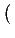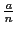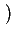, à partir du symbole de Legendre et
de la décomposition de n en facteur premier.
Soit
n = p1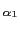..pk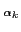
où pj est premier and  est un entier pour j = 1..k.
Le symbole de Jacobi de a est définit par :
est un entier pour j = 1..k.
Le symbole de Jacobi de a est définit par :
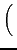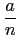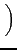 =

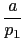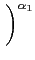...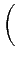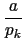

On tape :
jacobi_symbol(25,12)
On obtient :
1
On tape :
jacobi_symbol(35,12)
On obtient :
-1
On tape :
jacobi_symbol(33,12)
On obtient :
0
Documentation de giac écrite par Renée De Graeve